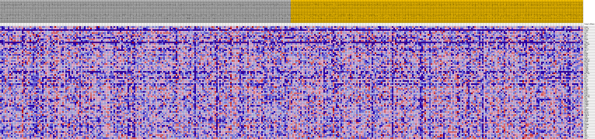
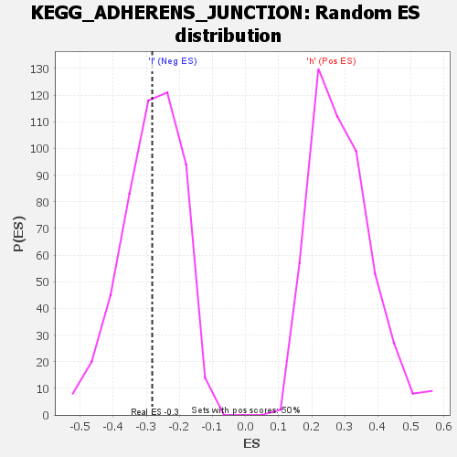

| | | Dataset | VCAN.VCAN.cls#h_versus_l.VCAN.cls#h_versus_l_repos |
| Phenotype | VCAN.cls#h_versus_l_repos |
| Upregulated in class | l |
| GeneSet | KEGG_ADHERENS_JUNCTION |
| Enrichment Score (ES) | -0.2821796 |
| Normalized Enrichment Score (NES) | -0.99149483 |
| Nominal p-value | 0.4612326 |
| FDR q-value | 1.0 |
| FWER p-Value | 1.0 |
Table: GSEA Results Summary
 Fig 1: Enrichment plot: KEGG_ADHERENS_JUNCTION
Fig 1: Enrichment plot: KEGG_ADHERENS_JUNCTION
Profile of the Running ES Score & Positions of GeneSet Members on the Rank Ordered List
| SYMBOL | TITLE | RANK IN GENE LIST | RANK METRIC SCORE | RUNNING ES | CORE ENRICHMENT | | 1 | PTPN1 | na | 793 | 0.102 | 0.0171 | No |
| 2 | SSX2IP | na | 1320 | 0.091 | 0.0355 | No |
| 3 | ACTN3 | na | 2358 | 0.077 | 0.0406 | No |
| 4 | ACTG1 | na | 3548 | 0.067 | 0.0397 | No |
| 5 | SRC | na | 3702 | 0.066 | 0.0572 | No |
| 6 | CDC42 | na | 3783 | 0.065 | 0.0759 | No |
| 7 | RAC2 | na | 5310 | 0.055 | 0.0651 | No |
| 8 | RAC3 | na | 5872 | 0.051 | 0.0707 | No |
| 9 | PTPRF | na | 6514 | 0.048 | 0.0738 | No |
| 10 | WAS | na | 8670 | 0.037 | 0.0461 | No |
| 11 | CTNNA2 | na | 9379 | 0.034 | 0.0436 | No |
| 12 | NECTIN1 | na | 10498 | 0.029 | 0.0322 | No |
| 13 | ERBB2 | na | 12042 | 0.022 | 0.0111 | No |
| 14 | RHOA | na | 12980 | 0.019 | -0.0001 | No |
| 15 | TCF7L1 | na | 13386 | 0.017 | -0.0022 | No |
| 16 | SNAI2 | na | 13712 | 0.016 | -0.0032 | No |
| 17 | NLK | na | 14289 | 0.014 | -0.0093 | No |
| 18 | PTPN6 | na | 15917 | 0.008 | -0.0362 | No |
| 19 | FGFR1 | na | 16286 | 0.007 | -0.0407 | No |
| 20 | ACTB | na | 16618 | 0.006 | -0.0447 | No |
| 21 | SMAD3 | na | 16940 | 0.005 | -0.0489 | No |
| 22 | CSNK2A2 | na | 16978 | 0.005 | -0.0480 | No |
| 23 | NECTIN2 | na | 17674 | 0.003 | -0.0596 | No |
| 24 | PTPRJ | na | 20882 | -0.000 | -0.1177 | No |
| 25 | BAIAP2 | na | 22437 | -0.004 | -0.1446 | No |
| 26 | SMAD4 | na | 22993 | -0.005 | -0.1530 | No |
| 27 | ACTN1 | na | 23143 | -0.006 | -0.1539 | No |
| 28 | CTNNB1 | na | 23324 | -0.006 | -0.1553 | No |
| 29 | ACTN4 | na | 23416 | -0.007 | -0.1549 | No |
| 30 | CTNNA3 | na | 24948 | -0.011 | -0.1793 | No |
| 31 | NECTIN3 | na | 25000 | -0.011 | -0.1769 | No |
| 32 | WASL | na | 25246 | -0.012 | -0.1778 | No |
| 33 | WASF1 | na | 26306 | -0.014 | -0.1925 | No |
| 34 | MET | na | 27197 | -0.017 | -0.2034 | No |
| 35 | EP300 | na | 27357 | -0.017 | -0.2009 | No |
| 36 | SNAI1 | na | 27550 | -0.018 | -0.1989 | No |
| 37 | YES1 | na | 28103 | -0.019 | -0.2029 | No |
| 38 | ACTN2 | na | 28985 | -0.022 | -0.2122 | No |
| 39 | LEF1 | na | 31839 | -0.030 | -0.2547 | No |
| 40 | WASF2 | na | 31979 | -0.030 | -0.2479 | No |
| 41 | CTNNA1 | na | 32472 | -0.032 | -0.2471 | No |
| 42 | MAPK1 | na | 33245 | -0.034 | -0.2508 | No |
| 43 | FARP2 | na | 34875 | -0.038 | -0.2686 | No |
| 44 | MAPK3 | na | 35627 | -0.040 | -0.2698 | Yes |
| 45 | CSNK2A1 | na | 35964 | -0.041 | -0.2633 | Yes |
| 46 | NECTIN4 | na | 36681 | -0.043 | -0.2631 | Yes |
| 47 | CDH1 | na | 37268 | -0.044 | -0.2601 | Yes |
| 48 | EGFR | na | 38054 | -0.046 | -0.2601 | Yes |
| 49 | TGFBR2 | na | 38548 | -0.048 | -0.2543 | Yes |
| 50 | PARD3 | na | 39620 | -0.051 | -0.2582 | Yes |
| 51 | CTNND1 | na | 39901 | -0.051 | -0.2474 | Yes |
| 52 | WASF3 | na | 39928 | -0.051 | -0.2321 | Yes |
| 53 | VCL | na | 41463 | -0.056 | -0.2428 | Yes |
| 54 | SORBS1 | na | 42312 | -0.058 | -0.2404 | Yes |
| 55 | SMAD2 | na | 43045 | -0.060 | -0.2351 | Yes |
| 56 | MAP3K7 | na | 43325 | -0.061 | -0.2214 | Yes |
| 57 | IQGAP1 | na | 43652 | -0.062 | -0.2083 | Yes |
| 58 | CSNK2B | na | 43774 | -0.062 | -0.1913 | Yes |
| 59 | AFDN | na | 44037 | -0.063 | -0.1766 | Yes |
| 60 | TGFBR1 | na | 45266 | -0.067 | -0.1783 | Yes |
| 61 | IGF1R | na | 46064 | -0.069 | -0.1714 | Yes |
| 62 | PTPRB | na | 46159 | -0.070 | -0.1517 | Yes |
| 63 | RAC1 | na | 46582 | -0.071 | -0.1375 | Yes |
| 64 | CREBBP | na | 47023 | -0.072 | -0.1233 | Yes |
| 65 | TCF7 | na | 49277 | -0.080 | -0.1393 | Yes |
| 66 | PTPRM | na | 49311 | -0.081 | -0.1151 | Yes |
| 67 | TJP1 | na | 50417 | -0.086 | -0.1088 | Yes |
| 68 | FER | na | 51427 | -0.091 | -0.0990 | Yes |
| 69 | FYN | na | 51576 | -0.092 | -0.0734 | Yes |
| 70 | LMO7 | na | 53575 | -0.107 | -0.0766 | Yes |
| 71 | INSR | na | 53894 | -0.111 | -0.0482 | Yes |
| 72 | TCF7L2 | na | 54045 | -0.113 | -0.0162 | Yes |
| 73 | ACP1 | na | 54656 | -0.124 | 0.0111 | Yes |
Table: GSEA details [plain text format]

Fig 2: KEGG_ADHERENS_JUNCTION
Blue-Pink O' Gram in the Space of the Analyzed GeneSet

Fig 3: KEGG_ADHERENS_JUNCTION: Random ES distribution
Gene set null distribution of ES for KEGG_ADHERENS_JUNCTION